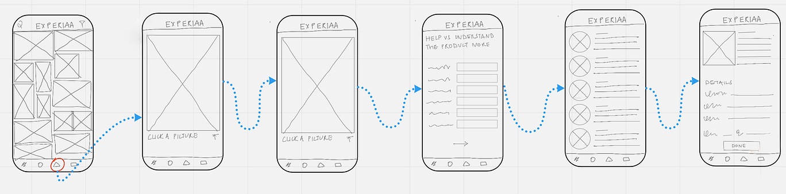

Ideation beyond imagination

Through the design sprint, we understood how to gain understanding about the user, identify their needs in order to come up with rational and justified solutions to be tested and iterated through user interviews. What else? How to have fun doing that!
The goal of this exercise is to get experience creating a hypothesis, gathering quick feedback to validate or invalidate the hypothesis, iterating upon the feedback received, and testing again.
I led a variety of projects at Colligo - everything from landing pages and branding guidelines to new apps and setting up systems for their current apps to continue rapid development. For Colligo Complete, I was there from the ideation stage towards a Minimum Viable Product (MVP) to the prototype stage.
I led a core team of 2 designers, with the supports from 2 product managers and a development team of 30 programmers.
In the exploratory phase, I focused on taking the insights learned from stakeholders, existing users, and non-users. I worked with the marketing team to conduct online surveys, focus groups and interviews with representative users in order to define target users, key pain points, and the core features.
300 online surveys, 4 focus groups and 15 pre-production one-on-one interviews were conducted to learn about targeted customer's needs and representative users' characteristics in order to define the key pain points and key features. A final report was also generated with personas, key findings, and recommendations.
300 online surveys, 4 focus groups and 15 pre-production one-on-one interviews were conducted to learn about targeted customer's needs and representative users' characteristics in order to define the key pain points and key features. A final report was also generated with personas, key findings, and recommendations.
New branding guidelines were created. The two half circles are a modern take on the "sync" symbol, a key differentiation for Colligo. This is an analogy to collaboration and that technology is always changing, something Colligo continually addresses as part of the "enterprising" brand attribute.
Let's redefine the problem statement based on user research!
In order to identify if this product was worth building, as well as what it needed to accomplish, we shifted through all of the feature requests during the focus groups and interviews. We were able to identify users' key pain points when they have to manage multiple enterprise systems on a daily basis: "It's not just about collaboration or knowledge, it's more about information management - Information velocity management and addressing information anxiety."
Deluge of information, hard to consume, navigate and manage
Pervasiveness of access, device and locations
The differences of UX/UI between work systems
Based on the key pain points we defined, the goal of Colligo Complete is to provide enterprise workers a more efficient way to access the most relevant data and messages across many backend systems, online and offline, anywhere. Although we knew that the app could grow to be something much larger and more robust, we focused on creating a MVP that meets the user's core needs - coping with information overload.
In order to identify and move forward with the best solutions as quickly as possible, we iterated through many ideas using card sorting, sketching, wireframing, and mockups. To begin with, we focused on solving the key pain points on the most important screens and then moved to the others. During the design process, more than 5 rounds of wireframes/prototypes were tested using in-lab one-on-one solution interviews, 8 test participants each round.
A MVP demo site with screenshots of the most recent prototypes with 'Try it for free' & 'View features' buttons was created using HTML & CSS, in order to identify the core features (features that get the most clicks), collect interested customers and users' emails, and get customers while building.
We then conducted solution interview using the wireframes and prototypes created during each iteration. Test participants consisted of existing marketing contacts and early adopters collected from the MVP demo page - 3 customers and 5 users per iteration.
Wireframes created from Balsamiq and Sketch were used at the first two rounds of interviews instead of prototypes in order to identify core features, key issues, and also to save time in the development stage.
On the right hand side, there is a time-ordered series of events taking place across a multiplicity of systems, for example a PDF file in Sharepoint, an Exchange e-mail file, or a Yammer post.
On the left hand side, users can navigate, sort and search the activity streams by their preferences.
The 'Project' feature is what Colligo tried to propose with its CEC console system, where companies or managers can push configurations and target specific content to their workers. For instance, when workers log in to the app for the first time, they will have all needed work files ready in their 'Project' folders.
Users can also configure their own customized 'Projects.' They can specify keywords, data types and applications.
Users can swipe (on mobile devices) or drag & drop individual/multiple activity streams to save into another application listed on the left navigation menu. Another feature we found would greatly help the team collaboration is the Share button. Users can share data with their team members within different systems simultaneously.
Colligo Console is the command center for data governance and user adoption: Onboard users, deploy policy, ensure compliance, and report analytics. It serves as the central management server for configuring and managing apps - logging user activity and making the data available to administrators to facilitate decision making and enforce compliance.
The user can choose from a wide range of trending gift ideas. Upon selecting one, the user is able to watch tutorials on how to make the gift and also gets an option to purchase the ingredients

This screen helps to keep the user updated with upcoming special dates, reminding them about any gift-giving event. The user can add interests of their friends and the app creates a suggested list of gifts.

In order to help source gifts through pictures, a lens feature helps the user locate vendors and suppliers of a particular product. The user has the option to click a picture or upload it from the gallery
In order to assist with bespoke delivery options, the app gives the user an option to choose from different themes. They can customize the delivery based on the interests of the receiver.

I learned how to take user interviews at a detailed level and further analyze them to create problem statements and formulate solutions to those problems. Getting exposure to the entire product design process instilled a thorough knowledge of each step and a deeper understanding of the design thinking process.
I would change, I would want to focus on one feature instead of taking multiple at once - this will help me design usable and interactive user flow from end to end, currently the application has multiple immersive features in it - I would rethink the MVP plan of the product and create a phasing for the same. Since it was a short duration sprint, I could not focus on design elements such as color palettes and iconography, which I would like to do.
{kind=link}